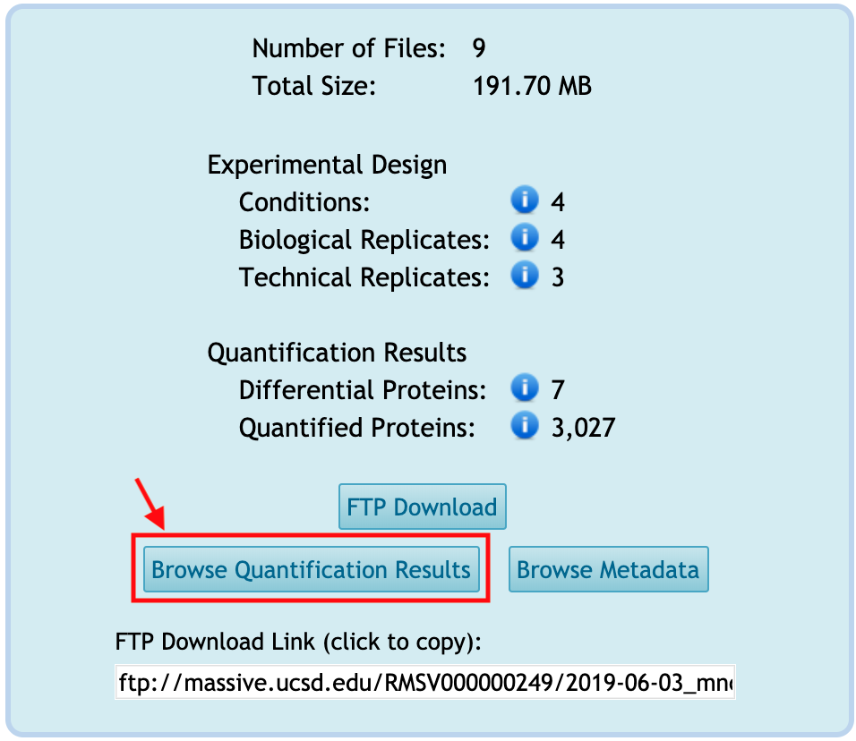
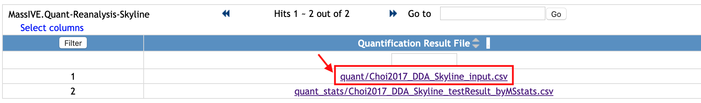

Browse Metadata
You can browse the metadata for the reanalysis by clicking on Browse Metadata from the reanalysis webpage (??? only from reanalysis webpage). This button is activated only when any tabular-type file(s) is available in Metadata category.
todo : 1) new capture for summary table+ only red box mark

You will move to the new webpage to show the list of files under Metadata category.

Select one file name and it will show how the file looks like. This is the example of annotation file for MSstats, which requires Run or Raw.file, Condition, BioReplicate. It can have many additional columns.

You can filter the rows. Let's check the rows for 'Condition1'.
- Type 'Condition1' in the empty box in the first row and below the column name, 'Condition'.
- Click
Filterbutton at the top left of table.
Then, the rows with 'Condition1' for Condition column are shown. For this example, there are three raw files from 'Condition1'.
If you want to remove filter and to see the whole table, remove 'Condition1' that you typed and click the same Filter button again.
Browse Quantification Results
You can browse the quantification results for the reanalysis by clicking on Browse Quantification Results from the reanalysis webpage (??? only from reanalysis webpage). This button is activated only when any tabular-type file(s) is available in Quantification Results or Statistical Analysis of Quantified Analytes categories.

You will move to the new webpage to show the list of files under Quantification Results or Statistical Analysis of Quantified Analytes categories.

Select one file, named xxx. It is under Quantification Results. This is the example of quantification result (MSstats reports) from MaxQuant.
todo : 2) new capture for metadata webpage
Select one file, named xxx. It is under `Statistical Analysis of Quantified Analytes. This is the example of the output of MSstats, using the quantification result from MaxQuant (named xxx, the file shown above).
todo : 2) new capture for metadata webpage